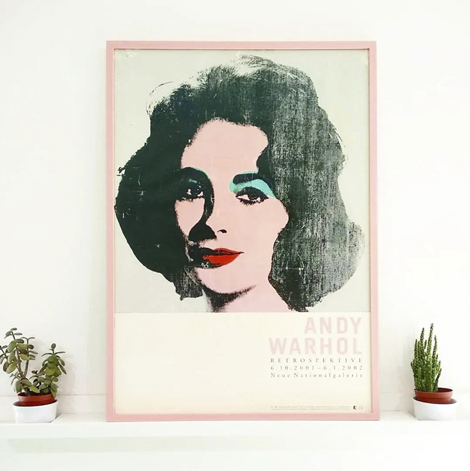
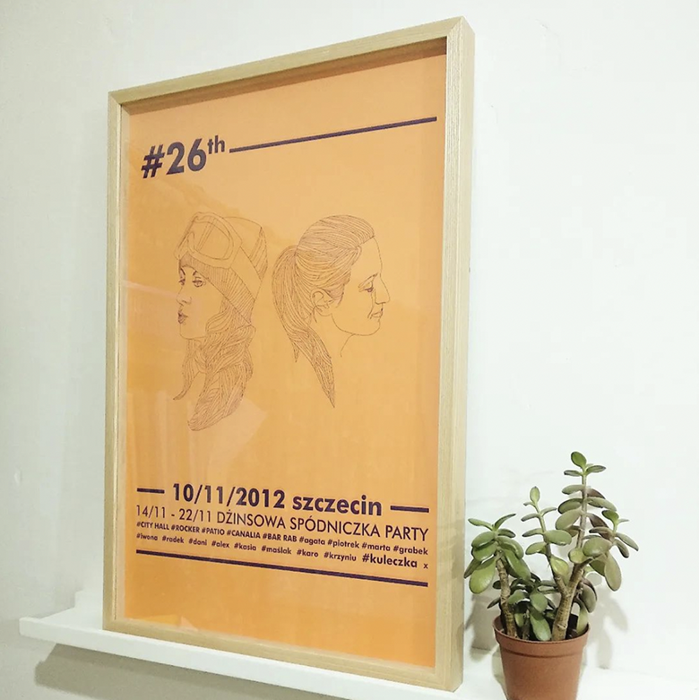
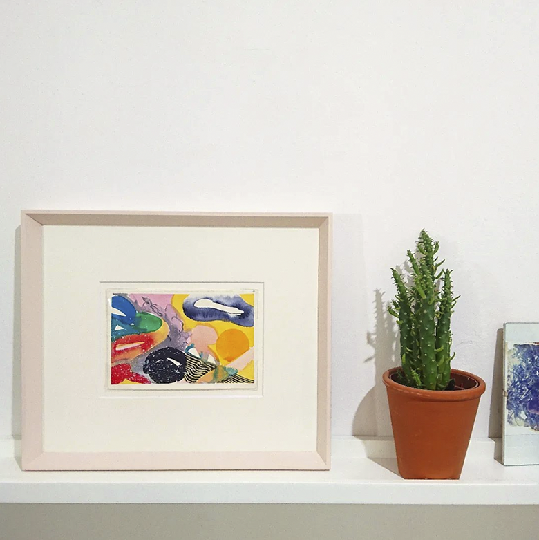

Raven Frames is a bespoke picture framing studio that specialises in contemporary, hand-finished frames. Each frame is crafted from conservation grade materials by Rachel Jones, a framer with more than 12 years of experience. We work with individual clients as well as artists and galleries, offering free consultations without obligation at our workshop in Greenbank, Bristol.